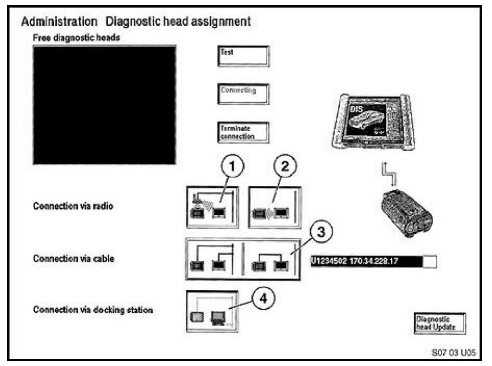
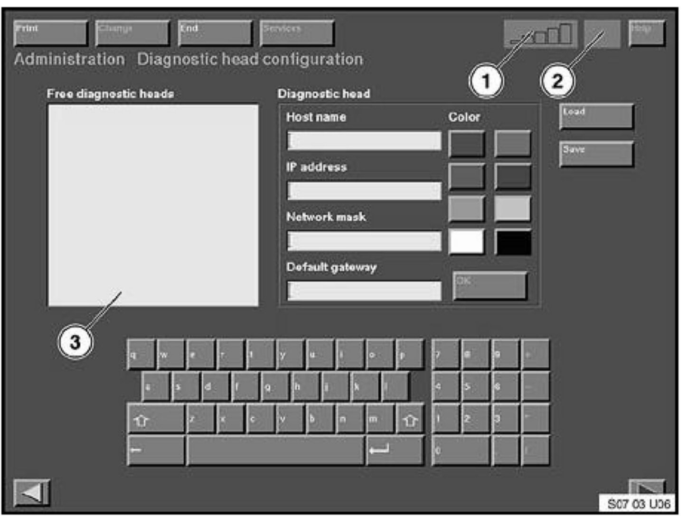
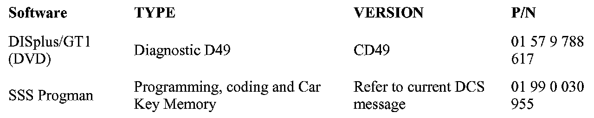

Engine Controls - Updated DISplus/GT1 Software
SI B07 02 96Workshop Environment Systems
March 2007
Technical Service
This Service Information bulletin supersedes S.I. B07 02 96 dated June 2006.
SUBJECT
CD49: Updated DISplus & GT1 Software
MODEL
All
SITUATION
A revised and expanded version of the "DIS" software has been developed. Note: with the release of CD49 Software, all previous versions become invalid.
1. Important CD installation notes :
a. CD49 is a 1 CD set which includes
^ Programs DVD
If CD48 is already loaded in the GT1/DISplus, you only need to load (using the "Installation" button) CD49 Programs. Do not reload the base CD. If a version prior to CD48 is currently loaded, a full load using Base CD48 and Program CD49 must be performed using the instructions at the end of this SI.
a. Loading instructions Follow the loading instructions included with this SI.
b. After CD49 is loaded in the GT1, the latest PROGMAN version (only when used as a remote access for PROGMAN) needs be loaded. Refer to SI B61 13 02, B61 01 04 & B61 03 05 for information regarding PROGMAN fixes. Refer to SI B09 01 04 for Progman instructions. It is not recommended to load Progman in the DISplus due to its limited memory.
c. A list of control module acronyms can be found in SBT 00 01 03 (035). Refer to SI B00 06 03 for instructions regarding how to access SBT's.
d.
After installation is complete, run available online updates.
CD49 Changes
1. To view additions and updates included with CD49 select "Diagnosis, Services & News". All major changes are viewable in the "Important new features" overview.
IMPORTANT SCREENS:
The following are changes in the Administration menu since CD34.
Diagnostic Head Assignment Screen

This screen is used to specify how the GT1 is going to connect to the diagnostic head. The choices are:
1. Connect using the workshop network and an Access point.
2. Connect not using the network, but instead using radio communication.
3. Connect using direct cable connection to the workshop network or without the workshop network.
4. Connect using direct cable to the network and using the Docking Station.
Diagnostic Head Configuration Screen

1. This is the signal strength box that appears on almost every screen. Strengths range from Red (no good) to green (good).
2. This box will show a picture of a diagnostic head with its associated color band when the head is connected on a vehicle and connected in the software.
3. This screen is used to assign the network addresses and designation colors to the diagnostic heads. As before, the free diagnostic head appears in the "Free diagnostic heads" box. After physically touching the free head in box 3, the current name and IP's are transferred into the "Diagnostic Head" box to the right. This is where any changes are made. Changes must be saved with the "OK" button.
PARTS INFORMATION

LIST OF CURRENT SOFTWARE
PROPER CARE OF CDs
1. Never handle a CD by the top or bottom. Only handle it by the sides.
2. Do not affix paper or tape, and avoid scratching either side.
3. The disc revolves at high speed within the CD drive. Never use a defective or bent disc.
4. If the disc should become soiled, gently wipe the surface with a soft lint-free cloth. Wipe from the center of the disc to the edge.
5. Do not use record cleaning sprays or anti-static agents on CDs.
6. Do not store in direct sunlight.
DISplus CD49 Loading Instructions
Before loading CD49 make sure that you have the following.
DISplus Installation 3.5 inch floppy disk V2.0 -0Green label- (01 69 0 025 784).
A new version installation floppy is used since CD37. It is version 2.0 with a green label. Discard the old version 1.0 red label floppy.
Note:
Do not load old TIS CD's in the DISplus. TIS CD's will impair the operation of the On-line update function.
1 DISplus Base system CD48
1 Program CD49
Before loading CD49 make sure that you do the following
From the administration menu select "Config", then "System" to print the network configuration. The IP address may be needed.
1. Start with the DISplus power turned off and the Base CD in the DVD drive.
2. Insert the green floppy labeled "Installation DISplus V2.0" in the floppy drive.
3. Turn the DISplus on using the power button on the front of the machine.
4. After a short time, the message "ESC for post screen" will be displayed. Ignore this message.
5. Data from the green floppy will now be loaded. The green drive light will flash.
6. Insert the DISplus base CD when the message "You need the DISplus base CD in DVD drive" is displayed.
7. Remainder of Base installation is automatic and takes about 1 hour.
8. During the Base system loading the green floppy can be removed anytime after the message "You can remove the Base system floppy now" is displayed. The floppy must be removed before the DISplus is restarted.
9. Upon completion of the Base system installation process, the message "System Halted" is displayed. At this point the floppy and the base system CD must be removed. After removal, shut off the DISplus by pressing the power switch on the front cover.
10. Turn the DISplus on again by pressing the power switch on the front cover.
11. The next steps are as before (with the DIS). Select the language (the language box will read "German" not "English" ignore this), country and "BMW", DIr # (only use the 5 digit AG code on the list), center name and address.
12. When completed select "End" and "quit" then "Yes". Do not back arrow or you will lose all information you have just input.
13. Now the usual DIS start menu will appear. Select "Administration".
14. Insert the CD49 Programs CD into the CD drive.
15. Activate the drive and select "DIS Installation". Installation happens as with all prior software versions." Input password, then select "OK" and "OK".
16. Remove Program CD
Installation fault code notes:
^ If fault codes 200.166 or 200.168 are displayed the incorrect installation floppy has been used or the software for the DISplus diagnostic head has not been correctly updated.
^ If fault code 252 is displayed, an attempt to install PROGMAN has been made using DIS "Installation" instead of DIS "Update".
GT1 CD49 Loading Instructions
Before loading CD49 make sure that you have the following.
Important :
Do not load the GT1 installation CD. Start loading with the Base CD. If the installation CD is used, all network information in the Administration screen will be lost and the machines will be unusable until the network data is reloaded.
1 GT1 Base system CD48
1 Program CD49
1 PROGMAN Latest version (only if using as a remote access to PROGMAN)
Refer to the GT1 Owners Manual for pertinent GT1 hardware/operational information.
If fault code 252 is displayed, an attempt to install PROGMAN has been made using DIS "Installation" instead of DIS "Update".
1. Place the GT1 on its docking station and recline it to the DVD inclination position (see section 2.3.2 in the Owners Manual). Note: the GT1 must be in this position when loading software or damage to the unit will result.
2. Switch the GT1 on.
3. Open the DVD drive by pressing the eject drive on the drive door.
4. Insert the GT1 base system CD and close the drive.
5. Press and hold the on/off switch until the GT1 turns off.
6. Press the on/off switch until the GT1 turns on.
7. Loading of the Base System takes approximately 20 minutes.
8. Installation is complete when the message "End of CD install!!!. Remove the CD!!!..." is displayed.
9. Open the DVD drive and remove the GT1 Base CD.
10. Insert the Program CD and close the drive.
11. Press and hold the on/off switch until the GT1 turns off.
12. Press the on/off switch until the GT1 turns on. Screen calibration will now take place.
13. Select a language.
14. When you select "BMW" the bottom right arrow buttons turns green, press the green arrow button.
15. Select country "USA".
16. Press the "DIr. No" field and enter your center's AG center number (refer to listing). This will be the same number that appears in the DISplus DIr. No box.
17. Press the "Company designation" field and enter your center name.
18. Press the "address" field and enter your center's address.
19. Press "End", then "Quit" to save the center data.
20. Confirm with "yes" and the GT1 will reboot.
21. Activate the Program CD (it will probably already be active), and then select DIS "installation" from the administration screen.
22. Input your password (aka dealer no.) and select "OK", then "OK".
23. When finished, select deactivate CD on the bottom right of the Administration window. Open the DVD drive and remove the program CD. Replace it with the latest Progman CD.
24. Select "Activate", then "update" under the DIS column.

Disclaimer